Թեստ 22
30:00
1. "Ճանապարհային երթևեկության անվտանգության ապահովման մասին" ՀՀ օրենքի համաձայն՝ ՀՀ զինված ուժեր և այլ զորքեր զորակոչված անձանց D կարգի և D1 ենթակարգի տրանսպորտային միջոցներ վարելու իրավունքի վկայական կարող է տրվել՝
2. «Ճանապարհային երթեւեկության անվտանգության ապահովման մասին» ՀՀ օրենքի համաձայն՝ «BE» կարգի տրանսպորտային միջոցներ վարելու իրավունքի վկայական կարող է տրվել՝
3. Մոտոցիկլների շահագործումն արգելվում է, եթե`
4. Տրանսպորտային միջոցների շահագործումն արգելվում է, եթե
5. Թույլատրվու՞մ է արդյոք կարմիր ավտոմոբիլի վարորդին երթևեկել տրամվայի գծերով:
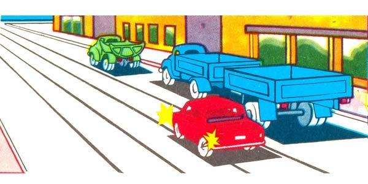
6. Ի՞նչ է ցույց տալիս այս նշանի տակ տեղադրված ցուցանակը`
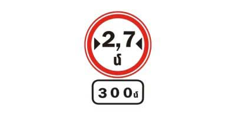
7. Այս ճանապարհային նշաններից որն է արգելում մուտք գործել խաչմերուկի տարածք, եթե առջևում երթևեկության ուղղությամբ առաջացել է խցանում, բացառությամբ աջ կամ ձախ շրջադարձ կատարելու դեպքերի։
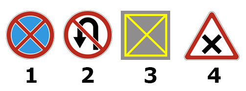
8. Թույլատրվում է արդյոք ուղևոր իջեցնել ճանապարհի այն տեղում, որտեղ եզրաքարի վերին մակերեսին գծված է դեղին հոծ գիծ և տեղադրված է «Կանգառն արգելվում է» նշանը:
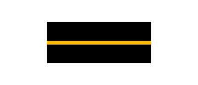
9. Այն դեպքերում, երբ տրանսպորտային միջոցների երթևեկության ուղիները հատվում են, իսկ անցման հերթականությունը կանոններով սահմանված չէ, ճանապարհը պետք է զիջի այն վարորդը
10. Այս վերելքի ուղղությամբ շարժվելիս հետադարձ թույլատրվում է, եթե
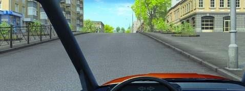
11. Այս նշանները նախազգուշացնում են
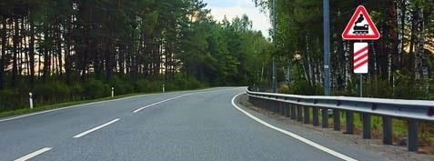
12. Երկրորդ անցում ձախ շրջադարձ կատարելու դեպքում վարորդն
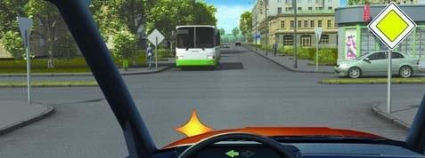
13. Տրանսպորտային միջոցները խաչմերուկը կանցնեն հետևյալ հերթականությամբ՝
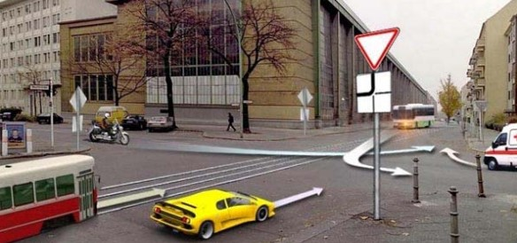
14. Ո՞ր տրանսպորտային միջոցների համար է առանձնացված A տառով գծանշված գոտին:
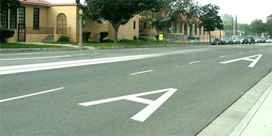
15. Թույլատրվո՞ւմ է կամուրջի վրա կանգառ կատարել ուղևոր նստեցնելու նպատակով
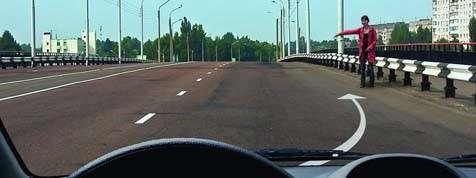
16. Եթե բեռի վիճակն ու դասավորությունը հնարավորություն չեն տալիս կատարել դրա փոխադրումը կանոնների պահանջներին համապատասխան, ապա վարորդը պետք է
17. Քարշակման ժամանակ քարշակվող տրանսպորտային միջոցի վրա պետք է միացված լինեն`
18. Տրանսպորտային միջոցից ի՞նչ հեռավորության վրա է տեղադրվում «Վթարային կանգառ» նշանը:
19. Կանաչ ազդանշանի միանալու դեպքում վարորդը
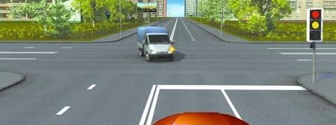